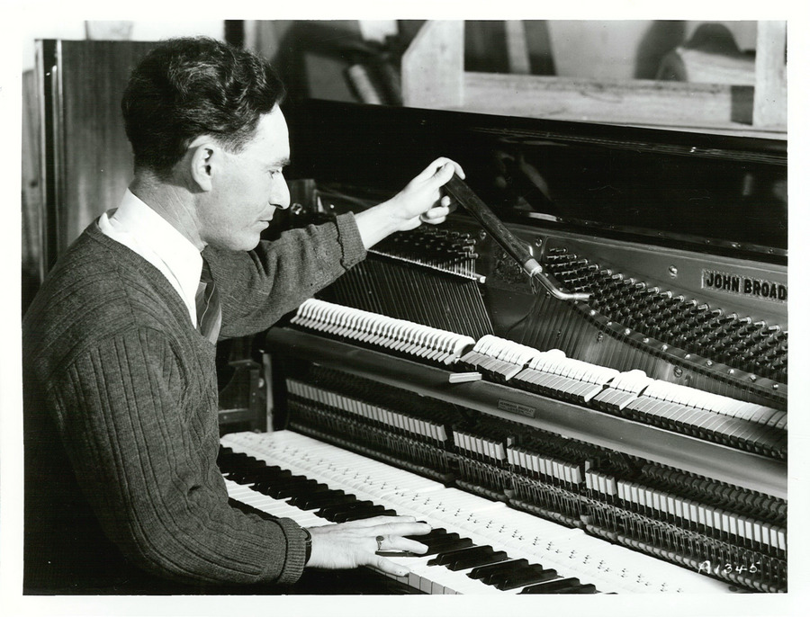

第7章｜調律師の仕事と現代のピアノ
この章の目次
ピアノは生きている？ 音を整える職人の技と、進化を続けるピアノの世界。
ピアノの調律師が作業をしているところを見たことがありますか？
ピアノのふたを開け、専用の工具を使って弦を調整する。ときどき鍵盤を弾き、音を聴き、また工具を動かす。
一見すると、音の高さを合わせているだけの作業に見えます。
ところが、調律師の仕事はそれだけではありません。
鍵盤の弾き心地を整えたり、ハンマーの状態を調整して音色を変えたり、楽器の不調を見つけたり。
そして意外なことに、ピアノはまったく弾かなくても、少しずつ音が狂っていくのです。
なぜそんなことが起きるのでしょうか。
7-1. そもそも、なぜピアノは調律が必要なのか？
第3章で紹介したように、ピアノの内部では200本以上もの弦が強い張力で張られています。
弦を強く張った状態が長期間続くと、弦やそれを支える構造は少しずつ変化します。
また、季節による温度や湿度の変化も、木製の部品や響板に影響します。
その結果、弦の張力が微妙に変わり、音の高さがずれていくのです。
弾かなければ、調律しなくてもいい？
答えは「いいえ」です。
ピアノの音程は、演奏しなくても時間とともに変化します。ヤマハもカワイも、使用頻度が少ないピアノについて定期的な調律を推奨しています。
つまり、ピアノは買ったときに調律すれば、それでずっと使える楽器ではありません。
長く良い状態で使うには、定期的な手入れが必要なのです。
7-2. 「調律」「整調」「整音」は、まったく違う仕事
ここは、今回の章でぜひ覚えておきたいところです。
一般には全部まとめて「調律」と呼ばれることもありますが、ピアノの技術的な手入れは、大きく三つに分けられます。
調律｜音の高さを合わせる
弦の張力を調整し、各音の高さや音程関係を整えます。
英語では Tuning といいます。
整調｜弾き心地を整える
鍵盤やアクションの細かな動作を調整し、弾き心地や反応を整えます。
英語では Regulation といいます。
整音｜音色を整える
ハンマーのフェルトなどを調整し、音色や音量のバランスを整えます。
英語では Voicing といいます。
この3つは、目的が異なります。
例えば、鍵盤を押したときに特定の音が鳴りにくい場合、音程を合わせる調律だけでは解決しないことがあります。
一方、音程は正しくても、一部の音だけが極端に硬く聞こえる場合は、整音が必要かもしれません。
調律師は、その違いを見極めながら楽器を調整します。
7-3. 調律師は、200本以上の弦をどう合わせる？
調律師が使う代表的な道具が、チューニングハンマーです。
ハンマーといっても、弦をたたく道具ではありません。
弦が巻き付けられている「チューニングピン」を、ほんのわずかに回すための工具です。
ピンを回して弦の張力を変えると、音の高さも変わります。
しかし、ピアノの調律は、単に88個の鍵盤を順番に調整するだけではありません。
中高音域の多くでは、1つの鍵盤に対して3本の弦があります。
調律師は、ほかの弦の振動をミュートという道具で抑え、まず1本を基準として音の高さを調整します。
続いて残りの弦を合わせ、3本が一体となって美しく響くようにします。
たとえば、中央の弦を先に調律してから、残りの2本を順に合わせます。
たった1本の弦でも、わずかなずれが音の響きに影響します。
それが200本以上あるのですから、調律には高い集中力と経験が必要になります。

写真 Archives New Zealand（CC BY 2.0、改変なし）。 写真の出典

- 基準を決める基準の高さから中音域の音程を整える。
- 弦を1本ずつ合わせるミュートで他の弦を止め、調律ハンマーでピンを回す。
- 同じ音の弦をそろえる残りの弦を順に開放し、うなりを聴きながらユニゾンを整える。
- 全体を確かめるほかの音域との響きのつながりを聴く。
図版 Kussoon制作。
7-4. 調律師は、何を聴いているのか？
ここは少しマニアックですが、とても面白い部分です。
調律師は、単に「この音は高い」「この音は低い」と判断しているだけではありません。
音を重ねたときに聞こえる「うなり」も、音を合わせる手掛かりになります。
どうしてうなりが聞こえるのか。調律師は何を目安にするのか。平均律やストレッチ調律とあわせて、第8章で詳しく取り上げます。
7-5. 調律には、どれくらいの時間がかかる？
調律師が1台のピアノを調律する時間は、楽器の状態や作業内容によって変わります。
ヤマハのピアノテクニカルアカデミーでは、通常の目安を約120分としています。
調律に加えて整調や整音、修理が必要な場合には、さらに長い時間がかかることもあります。
また、ピアノの製造段階でも非常に細かい調整が行われています。
ヤマハの解説によると、1つの鍵盤について10項目以上の調整があり、88鍵全体では1,000項目以上になります。
完成したピアノは、見た目には整然としています。
その裏側には、数多くの部品を精密に調整する職人の仕事が隠されているのです。
7-6. 調律は年に何回必要なのか？
実は、メーカーによっても推奨する頻度に少し違いがあります。
| ピアノの状態 | 調律の目安 |
|---|---|
| 家庭などで使用中 | ヤマハは少なくとも年1回、カワイは年2回程度を案内 |
| 購入したばかり | ヤマハは購入後1年ほどは年2回程度を案内 |
| 演奏会や録音で使用 | 会場や演奏の予定、楽器の状態に応じて調整 |
| 使用が少ない | カワイは少なくとも年1回程度を案内 |
必要な間隔は、使用頻度や楽器の状態、置き場所の温湿度の変化によっても変わります。
なお、長年調律していないピアノでは、弦の張力や楽器の状態によって、一度の作業で基準の音高に安定させられないことがあります。
その場合、複数回の調律が必要になることもあります。
「20年間使っていないから、1回調律すれば新品のように戻る」とは限らないのです。
7-7. ピアノは湿度に弱い？
ピアノには、木材、フェルト、金属など、さまざまな材料が使われています。
とりわけ木材は、周囲の湿度によって水分を吸収したり放出したりします。
その結果、響板やアクションなどの状態が変わり、音程や弾き心地に影響が出ることがあります。
湿気が多すぎれば、部品の動きが悪くなったり、金属部分にサビが発生したりすることもあります。
反対に、極端な乾燥は、木材の収縮や亀裂などの原因になり得ます。
ヤマハでは、季節に応じた温湿度管理と、急激な環境変化を避けることを推奨しています。
家庭では、直射日光、冷暖房の風、急激な温湿度変化を避けることが基本です。
つまり、調律師に任せるだけではなく、普段ピアノを置いている環境も大切なのです。
7-8. ピアノは何年使えるのか？
「ピアノの寿命は何年ですか？」
これも、簡単には答えられない質問です。
ピアノは、適切な管理と修理を行えば、何十年も使用できる楽器です。
しかし、すべての部品が同じように長持ちするわけではありません。
弦はサビや金属疲労などの影響を受けます。ハンマーのフェルトは演奏によって摩耗し、鍵盤の内部部品も徐々に消耗します。
さらに、響板、駒、ピン板など主要な構造部分の状態も重要です。
そのため、古いピアノがまだ使えるかどうかは、年数だけで判断できません。
必要に応じて、弦やハンマーを交換したり、アクションを修理・調整したりすることもできます。
大規模な修復を行う「オーバーホール」という選択肢もあります。
100年前のピアノは今でも使える？
可能性はあります。歴史的なピアノの中には、修復を経て演奏可能な状態で保存されているものもあります。
ただし、修復には費用がかかり、歴史的価値を守るために演奏を制限すべき楽器もあります。
古いピアノを使い続けるかどうかは、専門家による診断が大切です。
ここからは現代のピアノ
300年以上の歴史を持つアコースティックピアノですが、20世紀後半からは、まったく異なる方法で音を出すピアノも普及しました。
そして現在では、機械的なピアノとデジタル技術を組み合わせた楽器も登場しています。
7-9. アコースティックピアノと電子ピアノは何が違う？
アコースティックピアノ
ハンマーで弦を打ち、響板を振動させて音を出します。
電子ピアノ
鍵盤の動きをセンサーで読み取り、電子音源を使って音を出します。
この違いは非常に大きなものです。
アコースティックピアノでは、弦そのものが振動して音を生み出します。
一方、電子ピアノでは、録音した音や音響モデルによって生成した音などを、スピーカーやヘッドホンから再生します。
そのため、一般的な電子ピアノでは弦の調律は必要ありません。
音量調節やヘッドホン演奏ができることも大きな利点です。
ただし、電子ピアノも技術的な進歩を続けています。
木製鍵盤や高度な鍵盤機構を備え、アコースティックピアノに近いタッチを目指すモデルもあります。
「電子ピアノはすべて軽い鍵盤」という時代ではなくなっています。
7-10. 本物のピアノなのに、音を消せる？
アコースティックピアノの仕組みを持ちながら、音を消してヘッドホンで演奏できる楽器があります。
いわゆる「消音ピアノ」です。
通常の演奏では、ハンマーが弦を打ち、アコースティックピアノとして音を出します。
一方、消音モードに切り替えると、ハンマーが弦を打つことを防ぎ、センサーで演奏を読み取ります。
その情報を使って電子音源を鳴らすことで、ヘッドホンで演奏できるのです。
もちろん、鍵盤やアクションが動く機械的な音まで完全になくなるわけではありません。
それでも、夜間や集合住宅などで演奏する人には便利な仕組みです。
- 鍵盤を弾くアコースティックピアノの鍵盤を使う。
- 打弦を止める停止機構がハンマーを弦の手前で止める。
- 動きを検出するセンサーが演奏情報を読み取る。
- 電子音を聴く電子音源の音をヘッドホンなどで聴く。
図版 Kussoon制作。 図解の参考資料
7-11. 響板がスピーカーになるピアノ
ここでは、ヤマハの「トランスアコースティックピアノ」を紹介します。
このピアノは、アコースティックピアノでありながら、デジタル音源を響板の振動によって鳴らすことができます。
通常のピアノでは、弦の振動が響板に伝わって音が広がります。
トランスアコースティックでは、デジタル音源から得られた信号で加振器を動かし、響板を振動させます。
つまり、弦を打たなくても、ピアノの響板そのものからデジタル音を響かせられるのです。
| モード | 音の伝わり方 |
|---|---|
| 通常のピアノ | ハンマー → 弦 → 響板 |
| デジタル音源を使うモード | 電子音源 → 加振器 → 響板 |
普通のスピーカーとは異なり、楽器の響板を使って音を広げるという、独特の発想です。
7-12. 誰も弾いていないのに、鍵盤が動く！
自動演奏ピアノというと、昔の映画に登場するような、穴の開いた紙のロールを使うピアノを思い浮かべる人もいるかもしれません。
しかし、現代の自動演奏ピアノはずっと進化しています。
ヤマハの「ディスクラビア」は、演奏データを使って、鍵盤やペダルを実際に動かすことができます。
スピーカーでピアノの録音を流すのではなく、ピアノそのものが弦を打って演奏するのです。
そのため、自分の演奏を記録して再現したり、離れた場所のピアノで演奏を再現したりすることも可能です。
2025年には、故・羽田健太郎の過去の演奏をもとに、ディスクラビアで演奏を再現する試みが東京オペラシティの公演で実現しました。ヤマハは、過去の録音から演奏を再現した技術の詳細を、翌2026年に研究レポートで紹介しています。
300年以上前にクリストフォリが生み出したハンマーで弦を打つ仕組みが、今ではデジタル技術と結びついているのです。
- 演奏データ鍵盤を動かすタイミングなどを読み出す。
- 駆動部信号を受け、鍵盤などを動かす。
- アクションハンマーが動き、本物の弦を打つ。
- 弦と響板ピアノ本体から生の音が響く。
図版 Kussoon制作。 図解の参考資料
7-13. ピアノは、これからも進化する
現在のピアノには、大きく分けて次のような選択肢があります。
| 種類 | 音を出す主な方法 | 弦の調律 |
|---|---|---|
| アコースティック | 弦と響板 | 必要 |
| 電子ピアノ | 電子音源 | 不要 |
| 消音ピアノ | 通常時は弦、消音時は電子音源 | 必要 |
| ハイブリッド型電子ピアノ | 電子音源＋本格的な鍵盤機構など | 通常不要 |
| 自動演奏アコースティックピアノ | 自動でハンマーを動かし弦を打つ | 必要 |
※「ハイブリッドピアノ」はメーカーや製品によって意味や機構が異なります。カワイのNOVUSシリーズのように、実際のピアノに近いアクションを搭載し、電子音源を鳴らす製品もあります。
こうして見ると、ピアノは決して過去の完成品ではありません。
伝統的な楽器の構造を残しながら、電子技術や新素材と組み合わせ、さまざまな形に進化しています。
けれども、その中心にあるのは、今も変わらず「演奏者の表現を音に変える」という考え方なのです。
参考資料
- Piano Technicians Guild｜ピアノの手入れ
- ヤマハピアノテクニカルアカデミー｜調律師の仕事
- ヤマハ｜調律の間隔
- カワイ｜調律の適切な間隔
- ヤマハ｜整調・整音の工程
- ヤマハ｜弦の本数と総張力
- ヤマハ｜消音・トランスアコースティックピアノ
- ヤマハ｜羽田健太郎の演奏再現研究
- ヤマハ｜ディスクラビア